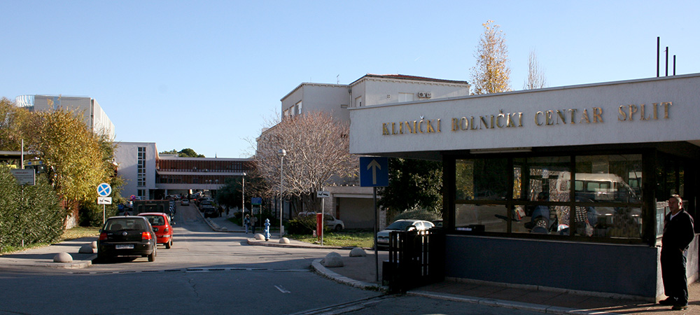

KBC Križine

Put Križina 8
.svg) Otvoreno (08:00 - 20:00)
Otvoreno (08:00 - 20:00)

Otvoreno (08:00 - 20:00)
KBC Firule
Spinčićeva ulica, Split
Otvoreno (08:00 - 20:00)
Otvoreno (08:00 - 20:00)
Otvoreno (08:00 - 20:00)